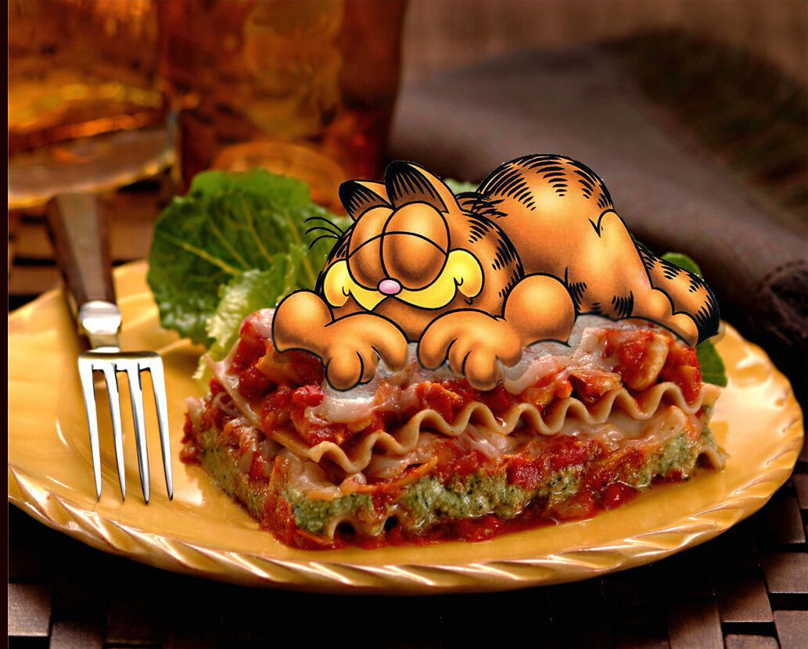

The Odin Recipes
Lasagna

How to Make a Lasagna
Making lasagna can be time-consuming, but the results are well worth the wait. You'll find a detailed ingredient list and step-by-step instructions in the recipe below, but let's go over the basics:
Ingredients
- Meat
- Onion and Garlic
- Tomatoes
- Sugar
- Spices and Seasonings
- Lasagna Noodles
- Lots of Cheese
- Egg
How to prepare a lasagna
- Make the meat sauce.
- Cook the noodles.
- Make the ricotta Mixture.
- Layer the lasagna according to the recipe instructions.
- Cover with foil and bake it.
- Let the lasagna rest before serving